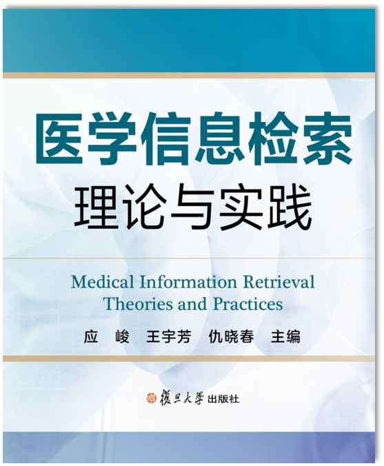

2026春 · MED20094.03 · 符礼平、王宇芳
来源：复旦教务系统教学大纲，本轮使用已授权账号下载。原始正文与考核信息；去除联系方式和网页脚本，内嵌图片按原字节去重保存。
培养学生高效获取医学信息资源的能力，掌握检索、管理、分析、筛选文献信息的方法，提升信息素养与学术素养。从学术探究的视角出发，培养选题到检索，文献管理到信息筛选阅读的能力，掌握科研继承与创新的文献分析路径，为学术研究和解决医学问题做好准备。
The course aims at cultivating students' skills of acquiring medical information resourses efficiently, enabling them to master the methods of retrieving, managing, analyzing and screening information, and thus improving their information and academic literacy. It covers research topic selection, literature retrieval and management, information screening and analyzing from the perspective of academic exploration. It helps students command the path of scientific research inheritance and innovation, and prepares students for academic research and solving clinical problems.
提升医学生学术探究能力，选题调研能力；使学生掌握文献检索规范、文献管理工具与文献评价指标，初步形成检索思维方式；通过综述阅读方法与写作规范学习，提升学生规范意识。本课程将为学生其他课程的学习、学术研究、毕业设计等构建必须的基础能力。
采用理论、思维与实践相结合的教学方法，计算机教室一人一机课堂教学。在线学习平台自主学习、教师讲授与学生展示融合。期末考核形式：课后开卷完成《学术信息调研报告》。
第一周 第1讲 导论、信息检索原理（3学时）
第二周 第2讲 文献管理与综述阅读（3学时）
第三周 综合练习一（1学时）
第3讲 PubMed数据库检索（2学时）
第四周 第4讲 Web of Science数据库检索（2学时）
第5讲 医学公共数据检索（1学时）
第五周 综合练习二（1学时）
第6讲 检索策略总结（1学时）
期末报告课题检索与答疑（1学时）
第六周 开卷完成期末试卷《学术信息检索报告》（3学时）
不在教室集中考核，课后学生自主安排时间，开卷完成检索报告。
1、王宇芳，符礼平等.复旦大学在线课程平台（超星）:医学文献检索与利用（上海市精品课程）,实时更新.
2、王宇芳等.《医学信息检索理论与实践》.复旦大学出版社，2025.

| 项目 | 比例 | 评定说明 |
|---|---|---|
| 课堂表现Participation | 10.0% | 不无故缺交课堂互动题 |
| 作业/实验/实践Assignment | 30.0% | 按时提交综合练习； 综合练习的正确率。 |
| 期末考试Final Examination：其他 | 60.0% | 开卷完成《学术信息调研报告》（自选课题）；选题质量、检索策略合理性、核心资源适用性、文献标注规范性。 |